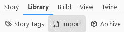
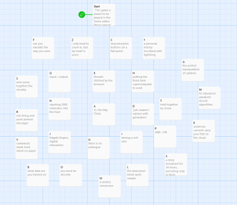
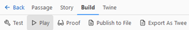
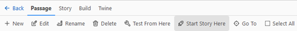
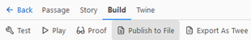

Throughlines: An (Un)Linked Hypertext Poem
“Throughlines" is a poem and a tool for poem creation. It is a meditation on human / computer cognition and materiality. The poem’s text explores these ideas using language that evokes both the supposed ephemerality and the inextricable materiality of the digital. Leveraging the affordances of the Twine Editor, it invites the reader to not only select between links but to establish links themselves. Twine projects can be opened in the browser for reading or playing but also can be imported into the editor itself. The reader draws the links between pre-written lines of poetry, creating an associative poem.
Instructions:
“Throughlines” is a poem read in the Twine Editor.
First, right-click the next button and click "save link as..." to download throughlines.html
Download throughlines.htmlImport the throughlines.html as a story. The “Import” option is inside the “Library” tab: 
You will see some passages. The “Start” passage includes a short description of the piece and brief instructions. Passages A-Z are lines of poetry pre-written by the author. 
Your role is to create links between these passages. You can do so using the following syntax:
[[Words to click on->Destination passage]]
For example, to create a link from the word “emulate” in passage F that links to passage D, you would wrap the word “emulate” like so:
[[emulate->D]]
You can see your poem at any time using the “Play” button under the “Build” tab.
You can change the starting passage by selecting the passage of your choice and clicking “Start Story Here”.
When you are finished, export your poem as a .html file using the “Publish to Story” option under the “Build” tab:
 Return to Portfolio Homepage